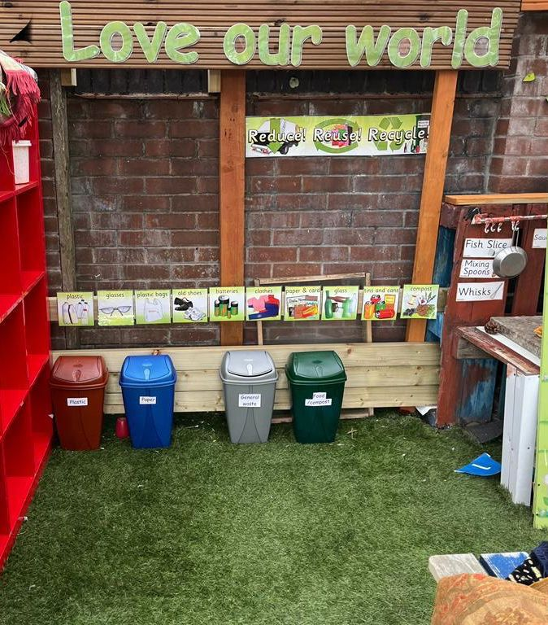

Starting nursery can feel like a big emotional step for the whole family. Many parents quietly wonder, “Is my child settling into nursery properly, or are they struggling?” One of the first places families explore for reassurance is the nursery settling-in process, which often begins before your child’s first day and continues through their early weeks. You can learn about how your child’s likes and dislikes are observed as they settle in by visiting the site’s dedicated settling page early on.
In the UK, early years guidance recognises that children need time to adjust to new people, routines, and environments. The nursery settling-in period is not a fixed timetable but an evolving journey shaped by you, your child, and the setting together.
What Does “Child Settling Into Nursery” Really Mean?
When we talk about a child settling into nursery, we are not just talking about behaviour. Settling is mainly about how safe and secure a child feels. A child can still cry at drop-off yet be settling well overall.
Emotional vs Behavioural Settling
Emotional settling is about trust, recognizing a familiar adult’s voice, smiling for a friend, or feeling secure enough to leave your side. Behavioural settling, on the other hand, is when a child begins to follow simple routines, such as lining up for songs or choosing activities.
Learning more about how staff observe and support this transition can often be found on pages that explain key person observations and how they help your child settle in.
Why Settling Is Not a Linear Process
Some days may feel easier than others. A child may happily join group play one morning and cling to you the next. This is part of normal child adjustment to nursery life, particularly as routines develop and the environment starts to feel familiar.
For a sense of typical routines and how these help children feel secure, you might explore the nursery’s daily routine page, which walks through how a typical day supports adjustment.
Understanding the Nursery Settling-In Period
The nursery settling-in period in the UK is usually gradual, supported by thoughtful routines and consistent communication. Some nurseries offer short initial sessions followed by longer attendance as confidence builds.
Typical Timeframes in UK Nurseries
There is no single timeline for how long it takes a child to settle. Most children begin to show signs of comfort within their first few weeks, but others may take longer, and that’s entirely normal.
Lemon Tree Preschool’s starting nursery information outlines how introductions are tailored to help every child move at their own pace.
Why Some Children Take Longer Than Others
Children settle at different speeds depending on temperament, previous experiences, and even recent changes at home. If you’re wondering how nursery supports emotional wellbeing overall, the Health & Safety page explains how the environment promotes security and calm for every child.
Week 1 at Nursery: First Reactions and Adjustments
The first week is often about observation. Children are taking everything in, new adults, new children, new sounds, and a new daily rhythm. This can feel overwhelming, even if the setting feels safe.
Separation Anxiety and Drop-Off Emotions
Many parents ask, “Why is my child crying at nursery drop-off?” It’s common for children to experience some separation anxiety, especially in their first few days.
Staff members on the Lemon Tree staff team are trained to support this transition, gently guiding each child at their own pace and allowing them time to adjust.
Eating, Sleeping, and Routine Changes
Some children may eat less at nursery or seem very tired at home after their first week. This is a normal sign of effort as they adapt to the nursery routine and the new day rhythm.
Week 2: Growing Familiarity but Mixed Emotions
By the second week, many children begin recognising staff members and favoured activities.
Comfort With Staff and Environment
Your child’s key person continues to observe progress and tailor support, detailed in the same key person section of the site that explains how individual needs are considered during settling.
Why Tears Can Still Happen
Some tears are not resistance but a part of emotional processing. Mixed days are expected in the UK’s early years settling process, and staff work closely with families to understand each child’s experience.
Week 3: Signs Your Child Is Starting to Settle
Week three often brings quieter changes, small moments of familiarity that signal confidence.
Increased Engagement in Play
As play becomes more familiar and satisfying, children tend to interact more, follow group activities, and show interest in favourite areas of the nursery.
For insight into how daily activities are structured, explore the play-based learning approach outlined on the nursery’s blog, which shows how play supports emotional and social development.
Improved Confidence at Drop-Off
While goodbyes may still be emotional, many children now settle more easily inside as they learn routines and familiar faces.
Week 4: When Nursery Starts to Feel Normal
By the fourth week, a more familiar rhythm often emerges. Knowing what comes next helps reduce anxiety.
Emotional Regulation and Independence
Some children begin to show independence in small tasks, washing hands, choosing play, or listening to stories.
Stronger Routine Awareness
When children anticipate transitions like snack time or outside play, it reflects growing confidence in the overall nursery start adjustment.
Clear Signs Your Child Is Settling Well Into Nursery
It’s natural to want clear reassurance. Here are some common signs that many families observe:
Emotional Signs to Look For
- Smiling when seeing a familiar adult
- Choosing activities confidently
- Calming quickly after drop-off
Behavioural and Social Indicators
- Joining small group play
- Following simple sounds or story routines
- Showing curiosity
To understand more about preschool learning goals, you might find the EYFS (Early Years Foundation Stage) section helpful, as it outlines learning and development expectations across the early years.
When Settling Takes Longer Than 4 Weeks
Some children take longer to feel completely comfortable, and that’s still within the range of usual development.
Common Reasons for Delayed Settling
Changes at home, a shy temperament, or even tiredness can slow the process. There’s no fixed rule for how long it should take.
When to Gently Check In With the Nursery
If concerns continue, a chat with staff, via the Contact Us form on the site, can offer peace of mind and clarify next steps.
Working With Nursery Staff During the Settling Period
Open communication with staff is an important part of early years nursery support for parents. Sharing details about your child’s preferences, routines, and small wins helps staff support your child’s emotional growth and sense of belonging.
Many families also explore the policy statements section to understand how procedures like collection, health, and safety operate in partnership with parents.
Final Reassurance for Parents
Every child’s nursery settling-in period is unique. Ups and downs are a natural part of learning to feel secure in a new place. With consistent routines, good communication, and gentle encouragement, most children gradually adjust and grow in confidence.
Remember, you are not alone in this. Simple moments, a smile, a favourite activity, or a calm goodbye, often signal meaningful progress in your child’s nursery journey.
FAQs About Child Settling Into Nursery
Is it normal for my child to cry every morning?
Yes. Many children cry at drop-off, especially in the early weeks, as separation can feel overwhelming at first. In most cases, children settle shortly after arriving once they reconnect with familiar staff and routines.
How long does it take for a child to settle at nursery?
There’s no fixed timeline for settling. Some children feel comfortable within a few weeks, while others, especially toddlers, may take longer as their emotional awareness and independence are still developing.
Should I stay longer at drop-off if my child is upset?
Often, calm and confident goodbyes are more reassuring than staying longer. Lingering can sometimes make separation harder, but nursery staff can guide you on what works best for your child.
Can a child seem settled at nursery but unsettled at home?
Absolutely. Many children hold their emotions together during the day and release them at home, where they feel safest. This is a common and healthy part of emotional adjustment.
What if my child was fine at first but is struggling later?
This can happen as the nursery routine becomes more real and expectations increase. Emotions often come in waves, and speaking with staff about daily routines usually helps clarify what’s normal and how to support your child.